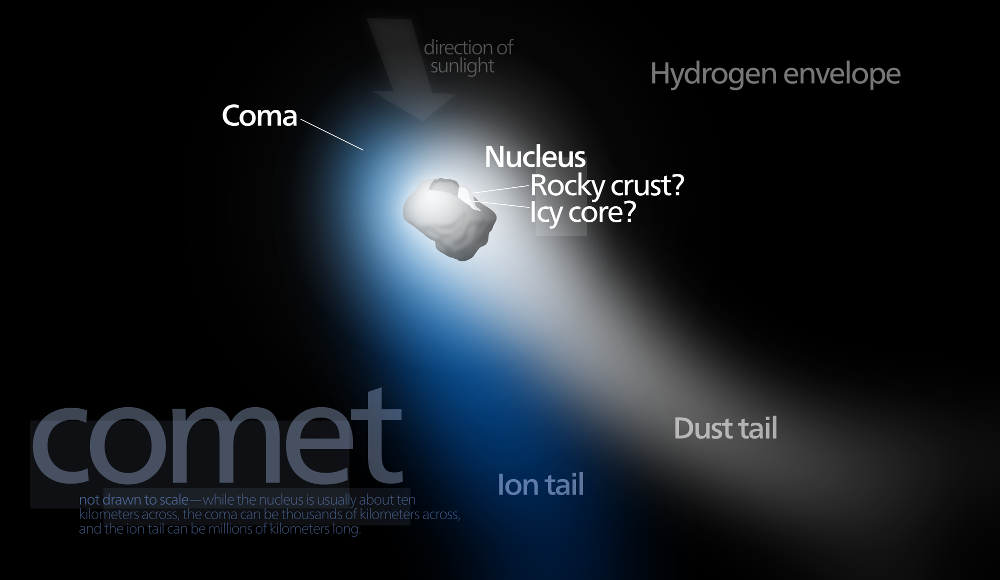
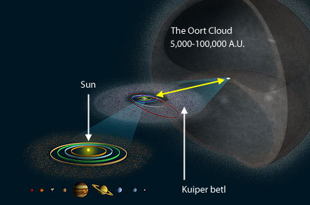
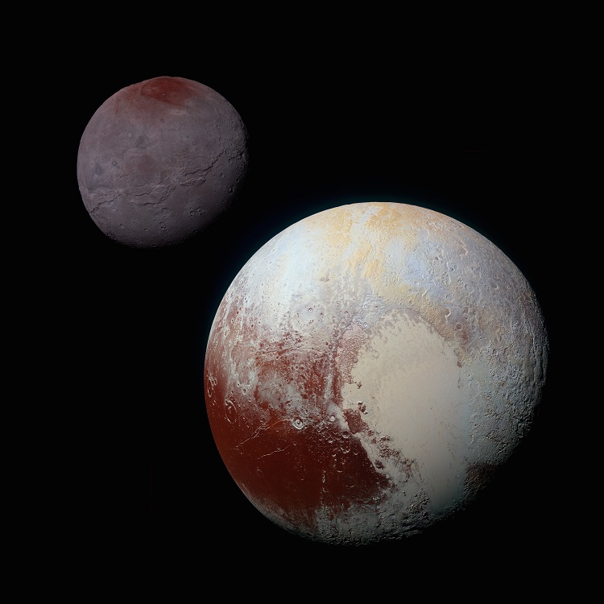

The outer solar system
Comets
Comets are balls of ice with some rock mixed in that come from the outer edges of the solar system. They usually have highly elliptical orbits, meaning that each orbit takes them close to the sun for a short time before going farther away again.
When farther away from the sun, a comet only consists of a chunk of ice and rock. This is called the comet’s nucleus and usually are less than 10 km across. However, as the comet gets closer to the sun, the sunlight heats up the comet and causes some ice to melt and then evaporate, forming a cloud of gas surrounding the comet called a coma. This cloud spreads out very far and can be somewhere between 10000 km wide to bigger than the sun. the gas in the coma then gets blown outwards from the direction of the sun by the solar wind, forming a tail that can extend for millions of kilometers.
Comets can be divided into 2 types: short term and long term. Short term comets only go to the orbit of Jupiter or Saturn at the furthest point in their orbit and go around the sun every 200 years or less. Long-period comets come from the Oort cloud thousands of AU away and can take thousands or even millions of years to complete 1 orbit.
Kuiper belt and beyond
Beyond the orbit of Neptune is the Kuiper belt, a cold and dark disk spanning from around 30 AU to 55 AU that contains trillions of objects. Made of varying amounts of rock and ice, these Kuiper belt objects (KBOs) are not quite asteroids nor comets. Having never formed into planets, KBOs are remnants from the solar system’s formation.
Surrounding the Kuiper belt is the scattered disk, a region extending out to perhaps 100 AU, although the boundary is very unclear. The objects here are like KBOs but were flung out farther by the gravity of Neptune early in the solar system’s formation. Most of these have very elliptical paths, and at their perihelion, when they are closest to the sun, they may enter the Kuiper belt and get close to the orbit of Neptune. If Neptune happens to be in the right point in its orbit, its gravity might affect the scattered disk object and send it flying towards the inner solar system. The scattered disc may be the source of short-period comets, comets that orbit the sun once every 200 years or less. Each orbit, they get close to the sun and because they orbit much faster than other comets, these only last a short time before burning up. The only way short period comets still exist is to have a continuous supply, and objects from the scattered disc are the most likely candidate.
Surrounding the scattered disk is a large, empty area with relatively few objects. Even further than that is the Oort cloud. Unlike the planets and Kuiper belt, the Oort cloud is not a disk, but a shell that surrounds the entire solar system. It is very far from the sun, extending from around 5000 AU to 100000 AU (1.6 light years). In fact, even up to 3 light years away, the sun’s gravity is still enough for things to orbit, but most objects are not that far. The Oort cloud contains trillions of comets. Because they are so far away, they may take anywhere from a few hundred to millions of years to complete a single orbit and are called long-period comets.
Dwarf planets
Among all the KBOs and comets are several dwarf planets, not quite big enough to become planets but still hundreds or thousands of kilometers across. The most well-known is Pluto. Pluto orbits between 29 and 50 AU from the sun and completes 1 orbit every 248 years. With a radius of 1188 km and a mass 18% of the moon, Pluto is the largest dwarf planet. The surface of Pluto is covered in frozen nitrogen. Underneath that is a layer of water ice, followed by a core of rock with 70% of Pluto’s radius. Pluto rotates every 6.4 days and has no magnetosphere.
Pluto has 5 moons. 4 of them are very small, but the largest one, Charon, has a radius of 600 km, over half that of Pluto’s. in fact, Charon is so large relative to Pluto that they orbit each other, making Charon possibly not a moon but part of a binary system with Pluto instead.
Another dwarf planet is Eris, with a distance from the sun of 38 AU at the closest, 98 AU at the furthest, and orbiting every 558 years. with a radius of 1163 km, Eris is slightly smaller than Pluto, although more massive.
The 2 other dwarf planets in the solar system are called Makemake and Haumea. However, there are many more objects big enough to be dwarf planets that haven’t been confirmed yet, including Quaoar, Sedna, and Orcus.
Hypothetical planets
So far, we have only found 8 planets in our system, and all objects beyond Neptune have been too small to be considered fit the criteria. However, there are a few theories of a 9th planet we have yet to discover, many times further away than Neptune. although this is only a small possibility, there are a few pieces of supporting evidence, such as the strange orbits of a few dwarf planets and KBOs.
Spacecraft
There are currently 5 spacecraft on a path to leave the solar system. The first ones launched were pioneer 10 and 11, but we have lost contact with them. Next was Voyager 1 and 2. In 2012, Voyager 1 was the first probe to pass the heliosheath and entered interstellar space, but it will still take hundreds of years before it reaches the Oort cloud. The most recent probe, new horizons, was launched in 2006.
Beyond the solar system
The sun is 1 of the 100 billion stars in our galaxy the milky way. The closest star to us is Alpha Centauri, about 4.2 light years away. Along with the other stars, our sun and solar system orbit around the center of the galaxy. From where we are, it takes 230 million years to complete 1 orbit.